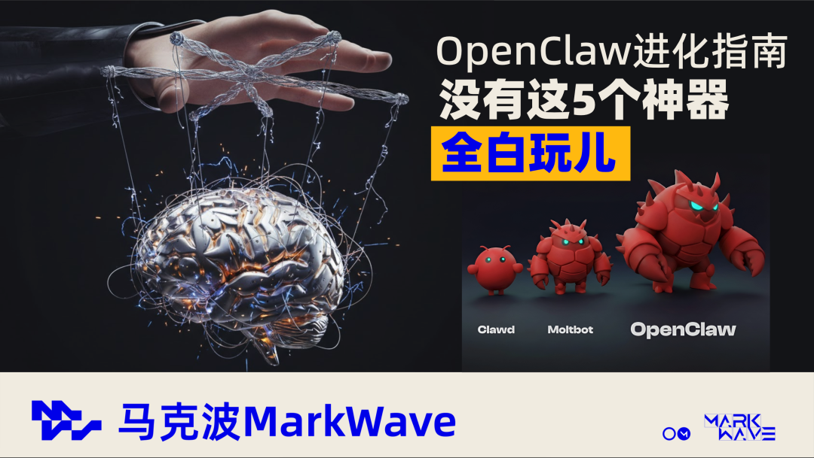
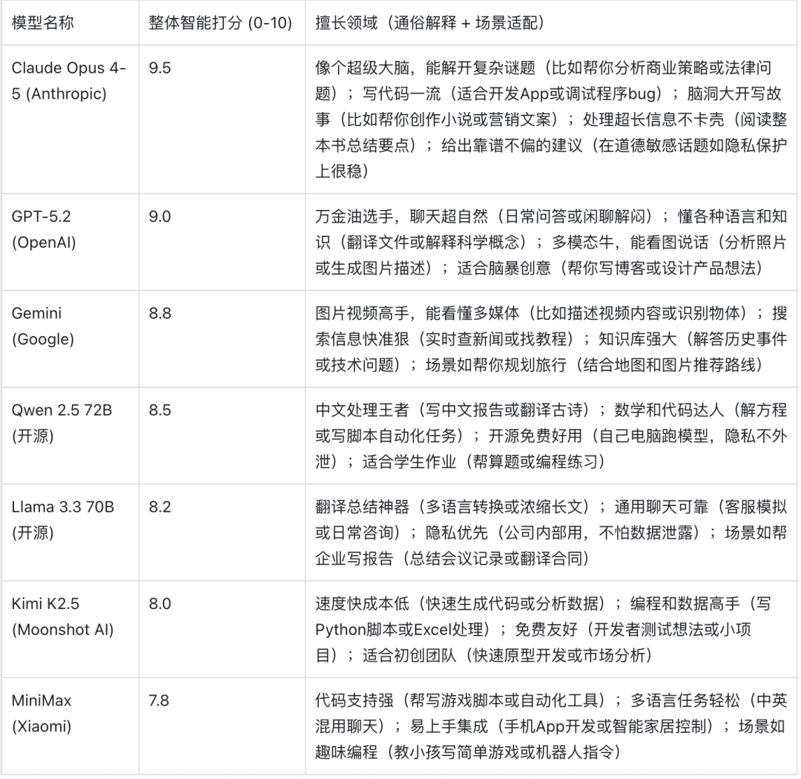
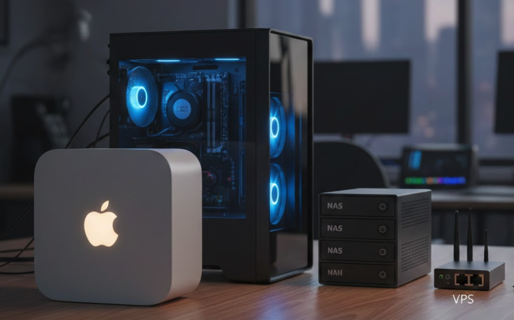
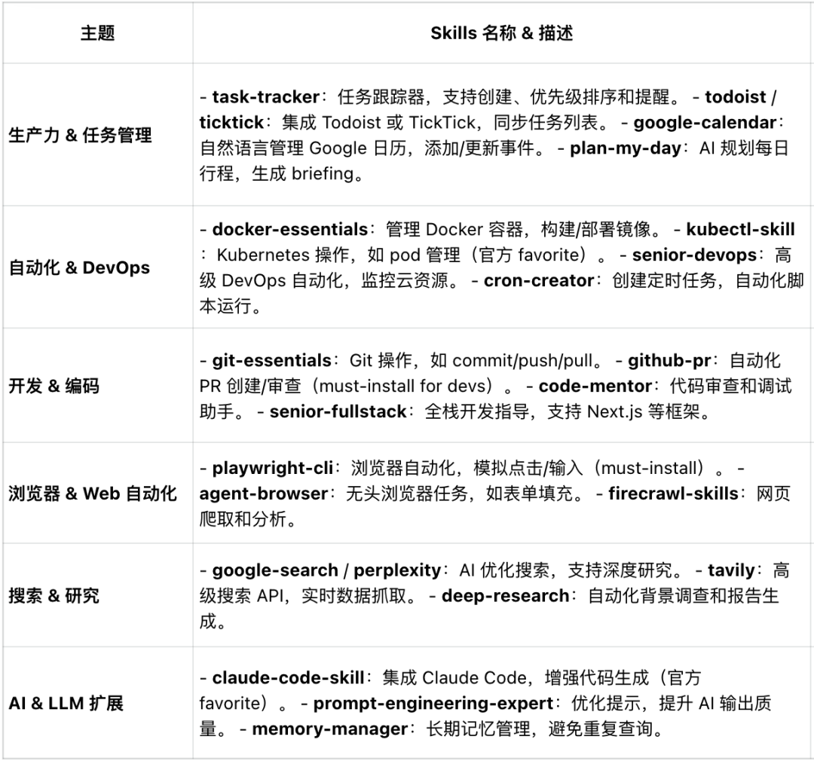
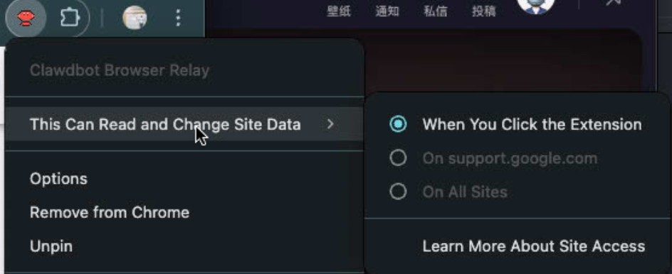
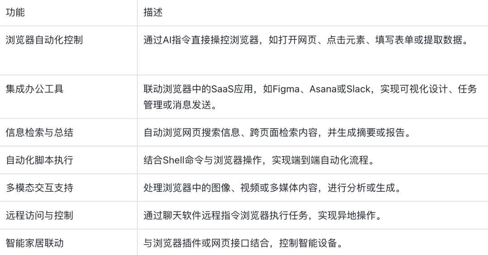
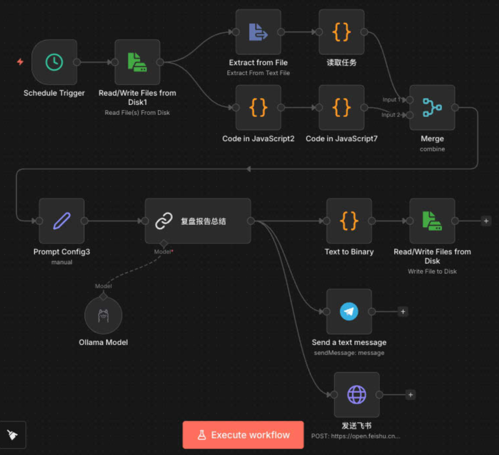

如果你看完我上一篇《OpenClaw跑了120小时，踩了无数坑总结出的5条必做》
一定能感同身受！
它十分强大，思考规划、脏活累活全帮你干 它脾气很差，一言不合就崩，无数小坑搞的你心力憔悴 它是“吞金兽”，一个不小心就刷爆 Token、丢配置、毁系统
我新开这个系列，就是给你的「安全感」。
我会把我一遍一遍踩坑调优的具体操作，详细的拆解给你，并附上配置文件！
保证即使是 【0基础纯小白】，也能立刻上手，畅快玩耍！
本系列会分为上中下三篇
上篇： 带你3步完成部署安装及基础设置，即刻拥有私人Jarvis
中篇： 稳定运行的5个必备设置，打造一个自我修复的稳定Jarvis
下篇： OpenClaw给生活带来的高效玩法，真正能干活的助理管家Jarvis
先码后看，这篇文章至少能帮你省下3天的调试时间！欢迎点赞转发+关注🫰
OpenClaw 太难玩了，还不如回去玩我的豆包？
我们在上一篇已经跑通了稳定配置/基础环境。
但有很多人在问：这玩意儿到底比 ChatGPT 强在哪？
在我玩了这么长时间，从一开始对它无限的幻想，到慢慢对它失望，再到现在能够正确看待它的强大，认识它的不足。我会明确告诉你，你一定要正确看待它
【不要低估】【不要高估】
如果仅仅拿它来对话聊天，我劝你还是用回豆包 / Gemini / ChatGPT，他们的体验更好！ 如果你0开发基础，想把所有天才想法，让它帮你构建开发实现，我也劝你从头补一些基础知识
AI 拉平了技术门槛，而不是降低了技术的专业
有了AI
你可以从一个0基础的小白，快速入门达成一些比较专业的输出
但你并不能变成一个顶级的程序员/设计师/经济学家！
那不禁要问：
作为普通人到底要怎么玩OpenClaw？
一个全专业通用的思路，不管你是程序员/设计师...
必须学会 “强强联合”。
5个神器联动，让你的OpenClaw真正成为你的左膀右臂
我在折腾了 200 个小时后，试过无数的有趣的功能后，
总结出了这 5 个 “强强联合”的神器组合。
不管你想实现
【自动化整理】一句话整理杂乱桌面/文档... 【调研分析】一句话生成全网信息简报/文献报告... 【极客科技】一句话语音控制电脑播放音乐、添加日程、打开勿扰模式... 【薅羊毛/省钱】实时监控商品价格，降价疯狂给你弹窗...
都离不开这4个神器的联动，可以说，这才是OpenClaw的真正手脚。
神器1：选好模型省力一半；选好设备法力无边
1、模型
模型是Openclaw接入的大脑，一个聪明的模型直接决定你的openclaw是专家还是弱智； 
各家模型整体打分及擅长领域，可以帮助你决策选择！（选择模型还有一个重要因素就是价格，目前在撰写一篇《Openclaw如何在输出效果和成本之间达到最优平衡？》欢迎关注更新）
2、设备
设备是OpenClaw连接的手脚，设备的能力直接决定你的OpenClaw的能力边界！
很多人选择低成本nas/软路由/VPS，当然部署都没问题，但是他们能做的事情非常有限，不能访问你的本地文档，不能控制你的电脑；
根据你的需求，选择合适的设备
VPS：只能对话聊天，做做爬虫， 电脑：定时提醒、自动化工作流、读写文档、浏览器交互...

非程序员不要去构建在VPS/软路由上，构建完其实除了聊天基本什么也做不了！至少是一台nas，还能读取你本地的文档...
神器 2：OpenClaw + Skills (无限技能包)
很多人抱怨 OpenClaw 聊天太蠢了，输出结果不理想，要跟他聊很久慢慢调试...
为了节省调试节省的时间，我们要引入Skills。
在上一篇中讲过，【结构化记忆】，我们对OpenClaw也做一个结构拆解！以便更好的理解Skills。
OpenClaw ：厨房操作间，锅碗瓢盆油盐酱醋全都配齐了，但他不具备做菜的能力。 对话模型：是你请来的厨师，八大菜系烹酿煎炸样样精通，但他需要明确的做菜指示。 SKills：就是菜谱，告诉你的模型，你要做“胸是炒鸡蛋”，还是“清蒸大闸蟹”
比如你想要让Openclaw生成一份调研报告，你可以调用 - Google-search/perplexity 的AI优化搜索Skill，你的openclaw会整合你的需求，让对话模型按照这个来给你输出调研报告。
怎么去构建你的Skills（无限技能包）？
官方仓库收录了3000+技能，一定能覆盖你99%的需求 针对特别个人的需求，你可以让AI调试生成符合你需要的skill 你还可以把多个skill，整合成工作流SOP，后续你调用skill，就直接帮你完成一套操作

（👆Skills技能列举）
Skills是第一个你不能错过的，并且必须用上的神器！
神器 3：OpenClaw + 浏览器插件 (读网神器)
这是最直观的“黑科技”。
1、OpenClaw Browser Relay
我们80%的日常操作是在跟浏览器交互，
安装官方浏览器插件后，OpenClaw 就相当于有了 “眼睛”。
它能直接 读取你当前打开的网页内容，甚至通过 snapshot 产生交互。
尤其针对很多反扒数据的网站，你在访问的同时，你的AI也能看到，你可以直接问你的AI，帮你分析复盘。
但是！ 
Chrome对这个插件的限制非常高，只能手动点击ON状态，才能访问，暂时不能自动化操作！
并且，切换标签页需要重新手动点击插件开启ON状态！
2、Google官方更强的浏览器控制项目 Computer Use！
在这里我推荐另外一个，你可以搭配使用；Google官方的开源项目Computer use，能够实现自动化查看控制，填写图表、模拟点击等！
这个项目也有两个小缺点：
需要手动绕过机器人验证； 只能用Gemini API模型
整体来说，对于浏览器的交互，手动操作都没问题，但是自动化方面还是有很多安全限制！
3、Chrome 自带 Gemini
当然还有更好体验的方式，就是Chrome带的Gemini，他对网页的读取更方便，分析后再跟OpenClaw联动。
总之三款工具，根据需求自由切换使用！
推荐玩法： 
神器 3：OpenClaw + GitHub 开源工具 (拒绝造轮子)
这个时代，重复造轮子是最浪费生命的事。
OpenClaw 最大的优势是它能运行 exec (终端命令)。
这意味着：所有 GitHub 上的开源命令行工具，都是 OpenClaw 的武器库。
当你想到一个需求，第一时间不要想着让OpenClaw帮你开发这个功能，去GitHub搜索能实现功能的工具。
使用它，而不是构建它！
节省时间就是节省生命！除非你是程序员，否则不要把时间及Token耗费在构建上。
推荐玩法：
YouTube 视频下载：不需要自己写爬虫。直接让 OpenClaw 调用 yt-dlp (GitHub 30k+ stars 的神器)。指令：帮我下载这个视频的音频 -> 它自动执行 yt-dlp -x ... -> 搞定。 GitHub 仓库管理：安装 gh CLI 工具。指令：列出我最近的 Issue -> 它自动调用 GitHub API 返回列表。
“能用现成的 CLI，绝不自己写脚本。”
把 gh, yt-dlp, ffmpeg 这些神器装在你的 Mac 上，OpenClaw 就能直接调用它们，能力瞬间爆炸。
神器 4：OpenClaw + n8n (自动化终极形态)
这是最强辅助，没有之一。
为什么说它最强，因为它能高效稳定的解决你80%的重复性劳动，构建工作流自动化定时执行！
OpenClaw 负责“理解意图”，n8n 负责“稳定执行”。
虽然OpenClaw也可以构建自动化，但
相比黑盒操作，n8n的视觉化节点，更容易操作也更稳定！ 模型更自由，你完全可以讲一些脏活累活拆解出来，丢给免费/本地的模型，输出的内容再由你的高级模型分析整合！ 
推荐玩法：全网情报抓取 Agent
这是我目前最满意的工作流：
我发指令：“分析一下目前 AI Agent 的热门玩法。” OpenClaw：理解意图，转化为 JSON 指令，发送给 n8n。 n8n： 调用 Brave Search API 抓取全网数据 (Twitter/Reddit/V2EX)。 调用 本地大模型 (Ollama) 阅读并总结这些数据。 生成一份结构化的《调研报告》。 Telegram：报告自动发回给我。
构建思路：
把复杂的、容易出错的流程 (比如搜索、抓取、清洗数据) 交给 n8n 可视化编排。OpenClaw 只做 “触发器” 和 “审核者”。
这样既稳定，又灵活；并且极大的节约了你的Token消耗！
总之，工具永远只是工具，它永远为你的需求而服务
想清楚你的需求，依托这 5 个组合，能把 OpenClaw 从一个“聊天玩具”变成了真正的 “系统中枢”。
【模型、设备】 给了它大脑和手脚。 【Skills】 给了它专业技能。 【浏览器插件】 给了它眼睛。 【GitHub 工具】 给了它武器库。 【n8n】 给了它自动化的流水线。
剩下的就看你能用它干出什么牛逼的事情了。
这就是我的思路：
不沉迷于单一工具的参数微调，而是把它们链接起来，构建一个能为你 24 小时干活的系统。
评论区聊聊：这 5 个神器组合，你当前最需要的是哪一个？
A、模型和设备：谁能给我一个即聪明又便宜的模型啊？
B、技能包 (Skills)：Skills才是最强的，完全能替代下面三位！
B. 浏览器插件 (Browser)：这个能绕过验证，自动化简直无敌！
C. GitHub 武器库 (CLI)：没有我不能做的！在座的各位都是XX！
D. n8n 自动化流：拼强有什么用？24小时稳定在线，你们有我能干吗？
下一篇预告：
既然提到了“模型”是核心，下一篇我们聊聊 《 OpenClaw 如何在输出效果和成本之间达到最优平衡 》。
欢迎关注、点赞、转发，一键三连～